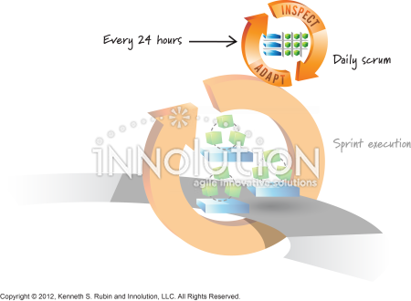

The Daily Scrum is a 15-minute Scrum event held every working day during a Sprint. Its purpose is to inspect progress toward the Sprint Goal and adapt the Sprint Backlog as necessary, creating an actionable plan for the next day of work. The Daily Scrum helps the team stay focused, improve communication, identify obstacles, and make adjustments when needed. It is an opportunity for Developers to coordinate their work and respond to changes throughout the Sprint.
The Developers are the required participants in the Daily Scrum. If the Product Owner or Scrum Master is actively working on items in the Sprint Backlog, they participate as Developers. The Developers decide how to structure the meeting, provided it focuses on progress toward the Sprint Goal. For example, members of a team developing a Scrum educational website might discuss which webpages are complete, whether any technical issues are blocking progress, and what adjustments will help them accomplish the Sprint Goal.

The Daily Scrum is not a status report to the Scrum Master, Product Owner, or management. It is also not intended to be a lengthy problem-solving session or a meeting where each person must answer three prescribed questions. Although Developers may discuss what they completed, what they plan to do, and what obstacles they face, Scrum does not require that specific format. Detailed technical discussions can happen separately after the Daily Scrum. The main objective is to help Developers inspect their progress, adapt their plan, and work together effectively toward the Sprint Goal.